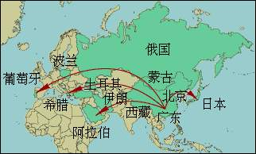
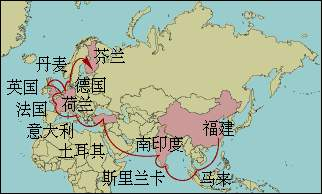

2.茶在国外的传播
当今世界广泛流传的种茶、制茶和饮茶习俗，都是由我国向外传播出去的。据推测，中国茶叶传播到国外，已有二千多年的历史。
约于公元五世纪南北朝时，我国的茶叶就开始陆续输出至东南亚邻国及亚洲其他地区。
公元805、806年，日本最澄、海空禅师来我国留学，归国时携回茶籽试种；宋代的荣西禅师又从我国传入茶籽种植。日本茶业继承我国古代蒸青原理制作的碧绿溢翠的茶，别具风味。
十世纪时，蒙古商队来华从事贸易时，将中国砖茶从中国经西伯利亚带至中亚以远。
十五世纪初，葡萄牙商船来中国进行通商贸易，茶叶对西方的贸易开始出现。
而荷兰人约在公元1610年左右将茶叶带至了西欧，1650年后传至东欧，再传至俄、法等国。十七世纪时传至美洲。
印度尼西亚于1684年开始传入我国茶籽试种，以后又引入中国、日本茶种及阿萨姆种试种。历经坎坷，直至19世纪后叶开始有明显成效。第二次世界大战后，加速了茶的恢复与发展，并在国际市场居一席之地。
十八世纪初，品饮红茶逐渐在英国流行，甚至成为一种表示高雅的行为，茶叶成了英国上层社会人士用于相互馈赠的一种高级礼品。
1780年印度于由英属东印度公司传入我国茶籽种植。至19世纪后叶已是“印度茶之名，充噪于世”。今日的印度是世界上茶的生产、出口、消费大国。
17世纪开始斯里兰卡于从我国传入茶籽试种，复于1780年试种，1824年以后又多次引入中国、印度茶种扩种和聘请技术人员。所产红茶质量优异，为世界茶创汇大国。
1880年，我国出口至英国的茶叶多达145万担，占中国茶叶出口量的百分之六十到七十。
1833年，在帝俄时代从我国传入茶籽试种，1848年又从我国输入茶籽种植于黑海岸。1893年聘请中国茶师刘峻周并带领一批技术工人赴格鲁吉亚传授种茶、制茶技术。
1888年土耳其从日本传入茶籽试种，1937年又从格鲁吉亚引入茶籽种植。
1903年肯尼亚首次从印度传入茶种，1920年进入商业性开发种茶，规模经营则是1963年独立以后。
1924年南美的阿根延由我国传入茶籽种植于北部地区，并相继扩种。以后旅居的日本与苏联侨民也辟建茶园。50年代以后茶园面积与产量不断提高，成为南美主要的茶生产、出口国。
20世纪20年代几内亚共和国开始茶的试种。1962年我国派遣专家赴几内亚考察与种茶，并帮助设计与建设规模为100公顷茶园的玛桑达茶场及相应的机械化制茶厂。
1958年巴基斯坦开始试种茶，但未形成生产规模。1982年，我国派遣专家赴巴基斯坦伊斯兰共和国进行合作。
20世纪50年代阿富汗共和国试种茶。1968年，应阿富汗政府邀请，我国派遣专家引入中国群体品种，成活率90%以上。
1962年我国派遣茶专家赴位于撒哈拉沙漠边缘的马里共和国，通过艰辛的引种实验，取得了成功。1965年应该国总统的请求，我国政府分批派遣了茶农场专家帮助考察设计与建设附有的自流灌溉设施的锡加索茶农场和经过热源改革具有国际水平的年产100吨的绿茶厂。此项目农业部认定为我国援助亚非拉及南太平洋地区一百多个农业工程项目中最成功的三个项目之一。
20世纪60年代玻利维亚共和国最初从秘鲁引进茶种试种。70年代台湾农业技术团赴玻考察设计与投资，开始规模种植茶园。1987年应玻政府请求，我国派遣茶专家赴玻，帮助建设200公顷的茶场及相应的机械化制茶厂。
1983年，我国向朝鲜民主共和国提供茶种试种，并在黄海南道临近的西海岸的登岩里成功种植。位于朝鲜半岛南部的韩国，种茶起源可以追溯到9世纪20年代，经过千年沧桑，至今茶叶生产初具规模。
目前，我国茶叶已行销世界五大洲上百个国家和地区，世界上有50多个国家引种了中国的茶籽、茶树，茶园面积247万多公顷，有160多个国家和地区的人民有饮茶习俗，饮茶人口20多亿。。中国近年来的茶叶年产量达286多万吨，其中三分之一以上用于出口。
茶叶诞生于中国。而今日世界各地都在饮用的茶叶是通过怎样的图径传播的呢？想了解“茶叶之路”一般人们是通过查阅各国的文献，按年代和区域，绘制出一幅茶叶传播之图，来解明它的传播之径的。
茶叶的发祥地位于中国的云南省，但茶叶之路却是通过广东和福建这两个城市传播于世界的。当时，广东一带的人把茶念为“CHA”；而福建一带的人又把茶念为“TE”。广东的“CHA”经陆地传到东欧；而福建的“TE”是经海路传到西欧的。请参见下图。

由陆地传播的“CHA之路”
广东 cha
北京 cha
日本 cha
蒙古 chai
西藏 ja
伊朗 cha
土耳其 chay
希腊 te-ai
阿拉伯 chay
俄国 chai
波兰 chai
葡萄牙 cha
(注:后面的为茶在当地的读音)

由海上传播的“TE之路”
福建 te
马来 the
斯里兰卡 they
南印度 tey
荷兰 thee
英国 tea
德国 tee
法国 the
意大利 te
西班牙 te
丹麦 te
芬兰 tee
(注:后面的为茶在当地的读音)